An exercise concerning 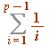, and the half and quarter sums 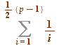 and 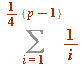
First, an exercise for you: prove, for an odd prime  , that the numerator (of the fraction) in the sum:
, that the numerator (of the fraction) in the sum:
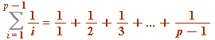
is 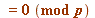 (i.e., is divisible by  ).
).
_________________
But now, two less obvious sums, the first due to Eisenstein (early 1800s), the second to Lerch-Glaisher (~ 1900):
- for any odd prime
 , the ' half ' sum:
, the ' half ' sum:
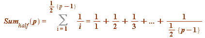
satisfies 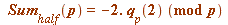.
| > | L := []: for p from 3 to 50 do if isprime(p) then
q||p := (2^(p-1) - 1)/p: ### the Fermat quotient base 2 S||p := add(1/i, i = 1..(p-1)/2): ### the half sum L := [op(L), p]: fi od: print(``); p := 'p': print(``); print(array([['p', ``, ``, 'S[half]', ``, q['p'](2), ``, S[half], ``, -2*q[p](2)], seq([p, ``, ``, S||p, ``, q||p, ``, S||p mod p, ``, -2*q||p mod p], p = L)])): print(``); lprint(`The last two columns are mod p reductions.`); |
| 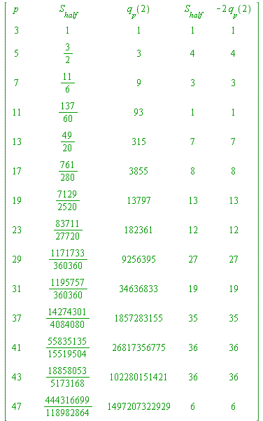 | |
| `The last two columns are mod p reductions.` |
| > |
- for any prime
 , the ' quarter ' sum:
, the ' quarter ' sum:
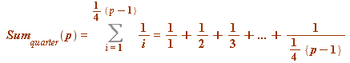
satisfies 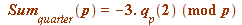.
| > | L := []: for p from 5 by 4 to 100 do if isprime(p) then
q||p := (2^(p-1) - 1)/p: ### the Fermat quotient base 2 S||p := add(1/i, i = 1..(p-1)/4): ### the QUARTER sum L := [op(L), p]: fi od: print(``); p := 'p': print(``); print(array([['p', ``, ``, 'S[quarter]', ``, q['p'](2), ``, S[quarter], ``, -3*q[p](2)], seq([p, ``, ``, S||p, ``, q||p, ``, S||p mod p, ``, -3*q||p mod p], p = L)])): print(``); lprint(`The last two columns are mod p reductions.`); |
| 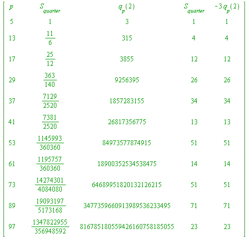 | |
| `The last two columns are mod p reductions.` |
| > |
Remark. This congruence holds for primes 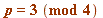; all that is required is 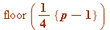 instead of 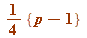.